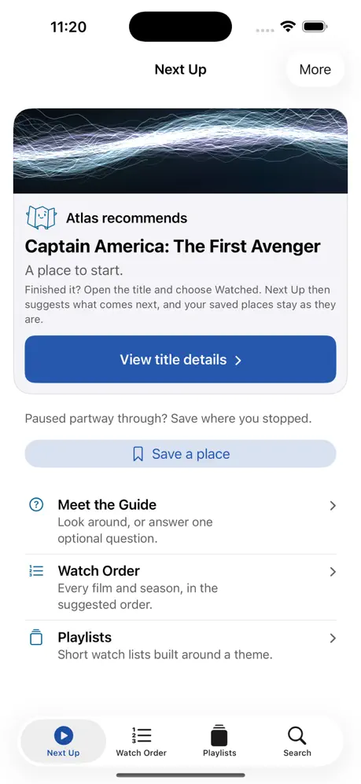
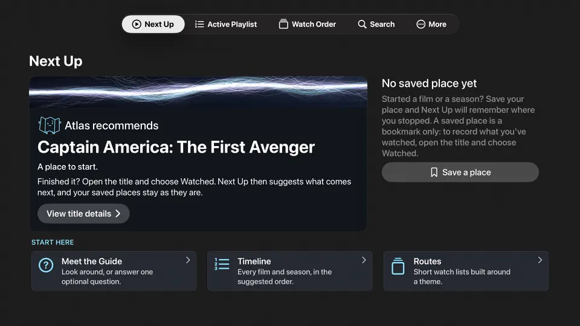

An independent MCU watch guide
Find your way through Marvel.
Pick a watch order, explore the films and series, and keep track of what you’ve seen. Whether you’re starting with Iron Man or catching up for Avengers: Doomsday, MCU Atlas helps you decide what to watch next.
$10.99 on the U.S. App Store. One-time purchase. No ads or subscriptions.
Inside the app
A catalog that keeps your place.
Choose an order
Browse the curated timeline or switch to release order. Filter the catalog to make a rewatch more manageable.
Build your Next Up list
Save multiple places across films and seasons. Mark films and episodes watched separately.
Go deeper when you want
Read released-film summaries, follow character links, and choose when to reveal details. Availability varies by platform.
From the App Store
See Next Up in the app.
The same idea, adapted to each screen: save a place and know what’s next.


Start here
Pick a route, not a pile of homework.
Guide 01 / Catch up
What to watch before Avengers: DoomsdayA three-film refresher and optional routes for Loki, the X-Men, and Wanda and Vision.
Guide 02 / Get oriented
MCU release order vs. timeline orderWhere to start, when to switch, and how to handle alternate universes.
On your Apple devices
Explore the App Store listings.
- iPhoneApp Store for iPhone
- iPadApp Store for iPad
- Apple TVtvOS 17.0 or later
- Apple Vision ProNative visionOS listing
- Apple WatchCompanion experience
- Compatible MaciPad app on macOS 14 or later with Apple M1 or newer
Features vary by device. MCU Atlas is a guide, not a streaming service, and does not include the films or shows. See support for device and iCloud details.